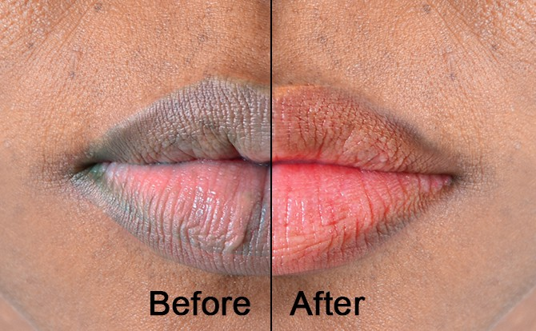

How to fix your patchy beard within 28 Days
Author: Devashish Chhetri Date: 09-June-2022
1. Give your beard 90-120 days to grow.
2. Boost your beard growth naturally through proper diet, exercise, and
sleep.
3. Take a biotin supplement if you aren’t getting enough through your
diet.
4. Use a boar’s hair Beard Brush to direct longer beard hair over
thinner spots.
5. Get a beard trim that accentuates the strong parts of your beard.
6. Beware of patchy beard scams.
7. If all else fails, grow what you can and incorporate it into your
style.

How to get Pink lips Naturally for mens with Home Indgrediants
Author: Devashish Chhetri Date: 09-June-2022
1. Use A Sugar Scrub Scrub the lip skin with a mixture of one teaspoon
each of almond oil and honey and two teaspoons of sugar. Scrub gently as
the skin on your lips is quite sensitive. The almond oil and honey will
give your lips moisture even as the sugar removes the dead skin. Regular
usage of this scrub can give you pink lips permanently.
2. Use Beetroot
Grate a small, peeled beetroot and extract its juice. Dab it on your
lips using your fingertips and leave it on for 15 minutes. Wash it off
later. You can repeat this twice a week to see quicker results. The
natural burgundy pigment in beetroot helps in making your lips softer
and pink.
3. Use Aloe Vera And Honey Take one tablespoon of freshly
extracted aloe vera gel from a plant and mix it with honey. Apply it on
your lips. Leave it for 15 minutes and wash it with water to see instant
results. Both aloe Vera and honey add hydration to your lips, thus
making it soft and pink.
4. Exfoliate Regularly All you need to do is
wet a napkin or a toothbrush and gently rub your lips with it in gentle
movements. This removes dead skin and the dry outer layer of the lips,
while also improving blood circulation. At night, always apply coconut
oil or a natural lip balm for soft pink lips.
5. Use Sunscreen A study
[1] found that 37% of people who use sunscreen the right way also use it
to protect their lips. Opt for a lip balm that has SPF 15 or more. It
needs to be applied daily and refreshed frequently. This prevents damage
from the sun’s rays.
6. Moisturise Regularly Keeping your lips moist at
all times is a sure shot way to ensure they remain pink. Use aloe vera
gel directly from the plant or buy a pure bottled version to soothe and
hydrate dry lips.
7. Hydrate Internally Drinking more water to stay
hydrated will prevent dry and chapped skin. It will also keep your lips
looking plump and moist, while also keeping discoloration of lips at
bay.
How to get natural glowing skin in 30 Days with Home Ingredients
Author: Devashish Chhetri Date: 09-June-2022
Home Remedies For Glowing Skin
- Turmeric
Turmeric contains curcumin, which has strong antioxidant and anti-inflammatory properties. It eliminates the harmful free radicals that are damaging the skin. It also enhances collagen production and keeps your skin supple and glowing (2). Gram flour gently cleanses the skin to make it clean and bright.
You Will Need
- 1/2-1 teaspoon turmeric powder
- 4 tablespoons gram flour (also called chickpea flour)
- Milk or water
What You Have To Do
- Mix the turmeric powder with the gram flour.
- Add enough milk or water to this to form a paste.
- Apply this paste on your face and neck. Leave it on for 15 to 20 minutes.
- Rinse with plain water.
How Often You Should Do This
Do this 1-2 times a week.

How to increase height naturally within 30 Days || Totally Natural with no side effects
Author: Devashish Chhetri || Date: 10-June-2022
Is there anything you can to do influence your growth or height?
- regular stretching
- strengthening your core.
- sitting with good posture regularly.
- exercising regularly.
- avoiding slouching.